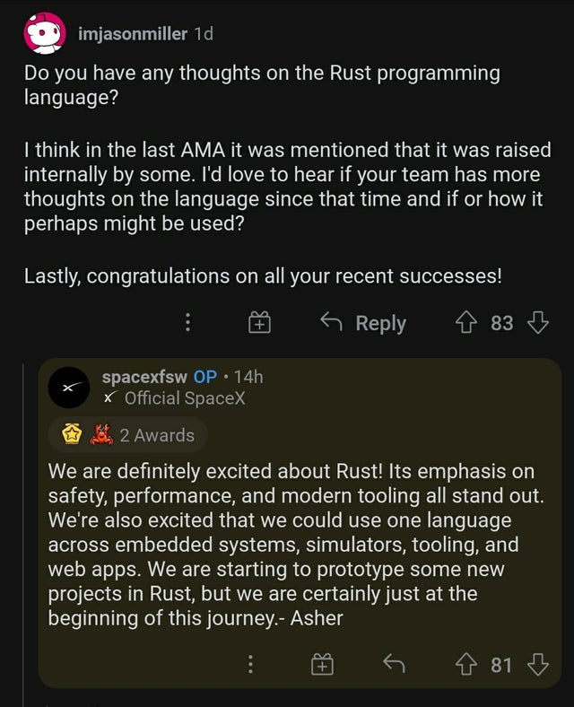

社区热点
编辑：李冬杰
Rust 核心团队进展
早在去年8月，核心团队就写了一篇题为《为 Rust的未来奠定基础》的博客文章，从那时起，核心团队一直在做大量的工作来帮助打下基础，并为项目上因这些事件而发生的变化做好准备。这种工作主要集中在内部，而不是真正从外部可见的东西，即使您在 Rust 团队中也是如此。 由于这些努力，Rust 基金会现在已经存在，并开始致力于其使命，这也意味着核心团队是时候转移工作重点了。
除了基金会的努力之外，Rust核心团队还开展了一些您可能知道也可能不知道的举措。
2021年 Roadmap RFC 于1月合并，这为今年的核心团队设定了目标，与往年有些不同，Rust为整个项目制定了目标，2021年决定将重点放在 Rust Core 上，并为团队设定自己的目标留出空间，而我们则专注于总体组织健康。
今年晚些时候，Rust也将启动明年的流程，目前还没有积极考虑这个问题，但理想情况下年度 Roadmap 将在12月合并，而不是在1月，因此团队希望能尽早开始，以便在 2022 年按时完成目标。
作为该工作的一部分，Rust项目已经开始了为每个团队提供正式章程的流程的第一步。 早在 RFC 1068 中，初始团队的范围就已经列出。 虽然多年来这对Rust很有帮助，但随着团队的组建、关闭和变化，Rust项目在明确每个团队的责任界限方面并不总是做得很好。 Rust 治理结构的神奇之处在于，每个团队都被赋予了重要的权力，可以按照他们认为合适的方式做事，但这也意味着Rust项目必须意识到范围。 随着该过程的继续展开将有更多关于此过程的报告，但最终目标已在路线图中说明：
Rust 团队将与核心团队合作，在一年中为每个 Rust 团队制定章程，目的是定义，特别是目的和成员要求。我们的目标是，到 2022 年，Rust 项目中的所有活跃团体都将拥有明确定义的章程和成员资格。
Audit of packages owned by the project
Rust核心团队一直在努力澄清Rust团队在crates.io拥有的包的状态，目前核心团队正在对这些程序包进行全面审核，以确保它们是项目应该拥有的东西，确保它们有适当的权限，并确保有人维护它们。
在安卓上运行 Rust
作者决定对目前一个客户的产品使用Rust，这个决定背后有两个原因，除了技术优点之外，还有一个无可争辩的事实，即 Rust 仍然是一种相对较新的语言，花哨和时髦。当你是一家初创公司时，使用前十年出现的任何技术只会让自己失败，如果不使用创新技术，公司如何进行创新呢？最快的成功方式是搭乘炒作列车。因此作者开始研究如何让Rust在安卓上运行起来，并提供了一个最小运行程序的模板。
Rust for Windows v0.9
Rust for Windows v0.9最近已发布，其中包括全面的消费支持以及其他几个更新！有了完整的使用支持，您现在可以使用Rust语言来调用任何Windows API（过去，现在和将来）。 Rust开发人员可以以一种惯用的语言访问整个Windows API接口，从而使他们可以轻松利用 Windows 开发的强大功能和广度。
一个 Rust 的新 AWS SDK：alpha 发布
我们很兴奋地宣布 Rust 的新 AWS SDK 的 alpha 版本发布。在 Rust 中开发的 AWS 客户想要一个本地的 Rust SDK，这样他们就可以使用他们习惯的语言结构，而 Rust 的新客户想要一个与他们在其他语言环境中使用的 SDK 行为类似的 SDK。在这个 alpha 版本中，客户可以在客户端试用7种AWS服务，并提供可用性方面的反馈。
Rust 六周年 🎉
2021年5月15日是 Rust 六岁生日（从2015年 1.0 版本算起），在这过去的六年里发生了许多变化，但 Rust 项目没有什么不同，依然没有基金会，没有 Const 泛型，许多组织仍然怀疑 Rust 是否已经准备好投入生产环境。
这篇文章将会回顾一下过去一年中的一些重大改进，社区如何在生产中使用Rust，最后展望目前正在进行的一些改进工作，这些改进和改进了Rust在小型和小型企业中的使用。明年的大型项目，让我们开始用Rust吧！
SpaceX 开始使用 Rust 了
考虑到 Rust 的安全性、高性能、现代化的工具集，SpaceX 可以在嵌入式系统、模拟器、工具集、web开发使用统一的语言，SpaceX 已经在开发一些原型工具，这仅仅是这个长途旅行的开始！

【Rust 安全案例】 Rust 的安全并不是指能写出 0 Bug 代码
题外话： 之前看到知乎上有人说 Rust 2021 年光 CVE 就有近百个。那咱们今天就捡个热乎的 CVE 看看到底是咋回事。
2021-05-18 ，openSUSE 邮件列表里收到一份安全报告，主题如下：
[oss-security] please: CVE-2021-31153，CVE-2021-31154，CVE-2021-31155: local root exploit and further
please 是一个 Rust 实现的替代 sudo 的工具，该库作者向 SUSE 团队提出 setuid-root 的代码安全审核，然后就被发现存在很多安全问题，并且包含一个比较严重的本地 root 漏洞，允许执行命令。
报告摘录如下：
- 可以进行任意文件存在测试，并且可以以root用户身份打开任意文件
- 通过search_path（）函数进行任意文件存在性测试
- 通过-d开关进行任意文件存在性测试
- 使用不可信的umask创建令牌目录“ / var / run / pleaser / token”
- 允许通过pleaseedit编辑任何文件，允许任意文件覆盖和所有权更改
结论：
- 哪怕是 Rust 这样的现代语言，要实现 setuid-root 二进制文件也是一个很大的挑战。
- please库中几乎没有unsafe（只有几行 libc/nix调用），所以基本已经不存在内存安全类的漏洞了，但是像这种逻辑漏洞是无法避免的，除非你不写代码。
- setuid 二进制文件是在非 root 用户 shell 程序中运行的 root 权限二进制文件
Rust for Windows v0.9最近已发布
意味着你可以用 Rust 调用任意 Windows API
(目测一大波 Rust 实现的恶意软件即将来袭 。。。)
- https://blogs.windows.com/windowsdeveloper/2021/05/06/announcing-rust-for-windows-v0-9/
- https://github.com/microsoft/windows-rs
- https://docs.microsoft.com/en-us/windows/dev-environment/rust/
观点：对 Windows-rs 的 看法
来自：Tony Huang
仔细看了一下winrt的设计，还是很不错的，集微软技术大成。
Windows技术栈中很重要的一个技术是COM。它的作用就是定义了一个语言无关的abi，让不同的语言可以无压力的互相交互。
举个例子，以前我们用VB6的时候可以使用COM调用ActiveX控件，然后到了.Net，还可以在.Net中直接使用COM组件，甚至可以把自己包装成COM组件来提供服务。
然后，我们再来看Windows在应用程序接口方面，和Linux有什么本质的不同。
在Linux中，所有对内核的调用，最终都是syscall，这个实际上是在每个arch上，通过一个syscall的number做的绑定，还是比较简陋的。操作系统只能提供很有限的syscall，其它的要嘛通过第三方库，要嘛通过ioctl里面的魔幻处理来实现。
而Windows完全不同，它的操作系统API是通过动态链接库的形式提供的。典型的就是那3个dll：KERNEL32.dll, USER32.dll, 和 GDI32.dll。那么它具体怎么跟内核交互，或者如何与系统的其它服务协作为应用程序提供这些功能，就是由操作系统的发行版决定的。从用户程序的视角来说，我只是调用了一个函数。如果使用了新的API，但是跑在老的系统上，只是会动态链接错误，找不到指定的symbol就好了。甚至可以通过API动态的检测是否存在某个接口。
而WinRT的技术基础就是基于COM技术，把这个功能变得更加强大了。
首先所有的操作系统组件（甚至你自己的组件），都可以通过COM把接口暴露出来，提供一份winmd文件，描述了你提供的接口。
然后针对不同的语言，微软官方提供了一个工具，依据这个winmd文件自动生成binding。
比如C++/WinRT，就是提供了一个编译器，在编译你自己的程序之前，根据你的依赖和windows sdk中的winmd文件生成c++的header，给你调用。然后运行时再使用COM把具体的dll和接口注入进来。
而windows-rs（Rust for Windows）干的事情是一样的，但是它很巧妙的利用了cargo的 build.rs 机制，在编译时做这个binding的生成工作 （具体参考 readme： https://github.com/microsoft/windows-rs/blob/master/readme.md）。
所以对于微软来说，由于操作系统的abi是语言无关的，通过winmd（从com的idl编译而来）描述的。那么对于新的语言的支持，只需要2个事情：
- 针对legacy的win32 api做一下手动的binding
- 针对新的WinRT API写一个对应的binding生成器
理论上来说，只要你用的api范围够小，rust for windows是能支持rust编译器支持的最低版本的windows的。
用于Rust的新 AWS 开发工具包– Alpha 版发布
- https://aws.amazon.com/blogs/developer/a-new-aws-sdk-for-rust-alpha-launch/
- https://github.com/awslabs/aws-sdk-rust
intellij-rust 提交了展开属性宏的 PR
https://github.com/intellij-rust/intellij-rust/pull/7194
1password 宣布登陆 Linux 平台
摘录：
- Linux 1Password的后端和底层逻辑是用Rust 编写的。 由于其强大的安全性，Rust已在企业中得到广泛采用，甚至被提议作为Linux内核的官方语言。
- Linux 1Password 的数据加密使用 ring库
- 用户界面使用 React+neon（Node.js 模块的 Rust 绑定）+Rust
- 1Password 公司为了回馈开源社区，赞助了 tokio 和 rust-analyzer，并且也开源了自己的一些项目。
Fuchsia OS 发布，reddit 网友讨论 Rust 等代码所占比例
- Rust 22%,
- C++ 18%,
- C 4%,
- Go 2%,
- Python 1%,
- Dart 1%
其余 52% 都是 json 相关的，不算os内主流语言。 单独算这几门语言，Rust 的占比接近 50% 了
https://www.reddit.com/r/rust/comments/nldg5c/fuchsia_os_partially_written_in_rust_has_shipped/
Rust binary search PR 导致 Polkadot 线上事故的缘由
知名公链波卡 (Polkadot) 5 月 24 号某个节点发生了一次比较大的线上事故(Out Of Memory)，是因为 Rust 标准库 binary search 一个优化 PR 导致的。
该PR 跑了将近一周时间的 crater 测试，也没有发现对线上 5 万多个 crate 有什么大影响。Rust 1.52 发布之后，没想到依然有人中招了，而且还是价值几十亿美金的项目。
@brson 特意发了 issue 说到这件事，但是 Rust 社区的人都认为这件事跟这个 PR 没有关系，因为 binary search 碰到多个重复的元素的时候确实是返回任意一个，文档上也说得很清楚了（所以这种情况下不会保证两个版本返回的位置一致，这也是 Polkadot 出现线上事故的原因)。
该 PR 作者(Folyd)说 ：
不管怎样，这件事给我的触动还是蛮大的。软件开发是复杂的，其本质原因在于现实生活就是复杂的。软件工程师只能尽可能规避发生这种情况的风险，但是没有办法做到万无一失吧。就像这位工程师说的我这是中了 Hyrum 定律（Google 一个叫 Hyrum 的工程师提的定律，可以理解为 API 领域的墨菲定律）。
Polkadot 的事故后复盘：https://polkadot.network/a-polkadot-postmortem-24-05-2021/
@brson 的 issue: https://github.com/rust-lang/rust/issues/85773
binary search优化 PR：https://github.com/rust-lang/rust/pull/74024
关于 PR 的文章：https://zhuanlan.zhihu.com/p/371460665
Hyrum 定律：https://www.hyrumslaw.com/
rustc_codegen_gcc: GCC-rs 的一个简单替代项目
GCC-rs 是 用 Cpp 重新实现 Rustc 的一个 GCC 前端。
为什么有 GCC-rs 这个项目？
- 想要支持更多的 CPU 架构
- 跨语言 LTO。GCC-RS FAQ将Linux列为激励示例。 具有讽刺意味的是，Linux支持ltvm但不是gcc！
- Rust 自举（Bootstrap）链很长，因为需要从C到OCAML，然后编译预发布 Rust 以编译 Rust 1.0编译 Rust 1.1 、1.2等，直到捕获最多1.53（或者最新版本）。 因此，如果您可以用C++中编写的 Rust 编译器直接编译1.53，则可以节省一些时间。
- 复用 GCC 插件
但 rustc_codegen_gcc 作者认为 GCC-rs 其实没有很好的解决这些问题。
rustc_codegen_gcc 项目只需将GCC插入现有的Rust编译器作为代码生成后端，就可以简单的达成这些目标。
该项目的主要目标是能够在LLVM不支持的平台上编译 Rust 代码。 次要目标是检查使用GCC后端是否提供任何编译速度改进。
当前 rustc_codegen_gcc 还是 WIP。
https://github.com/antoyo/rustc_codegen_gcc
https://github.com/Rust-GCC/gccrs
文章：https://shnatsel.medium.com/the-simpler-alternative-to-gcc-rs-90da2b3685d3